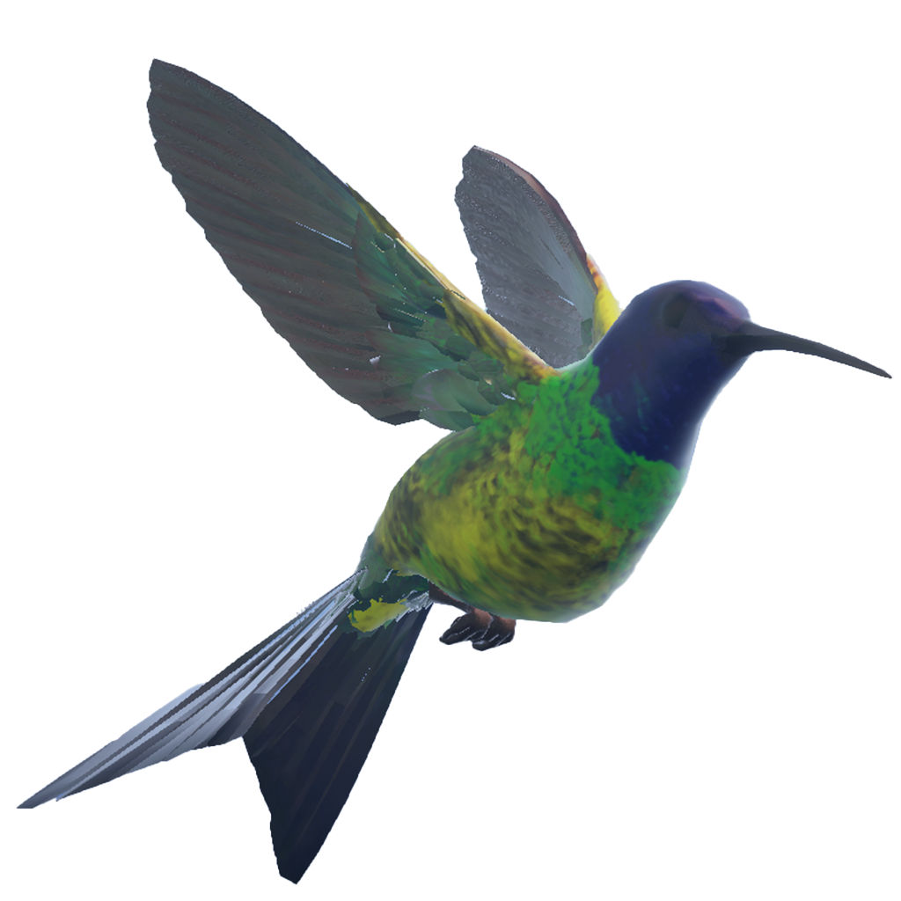
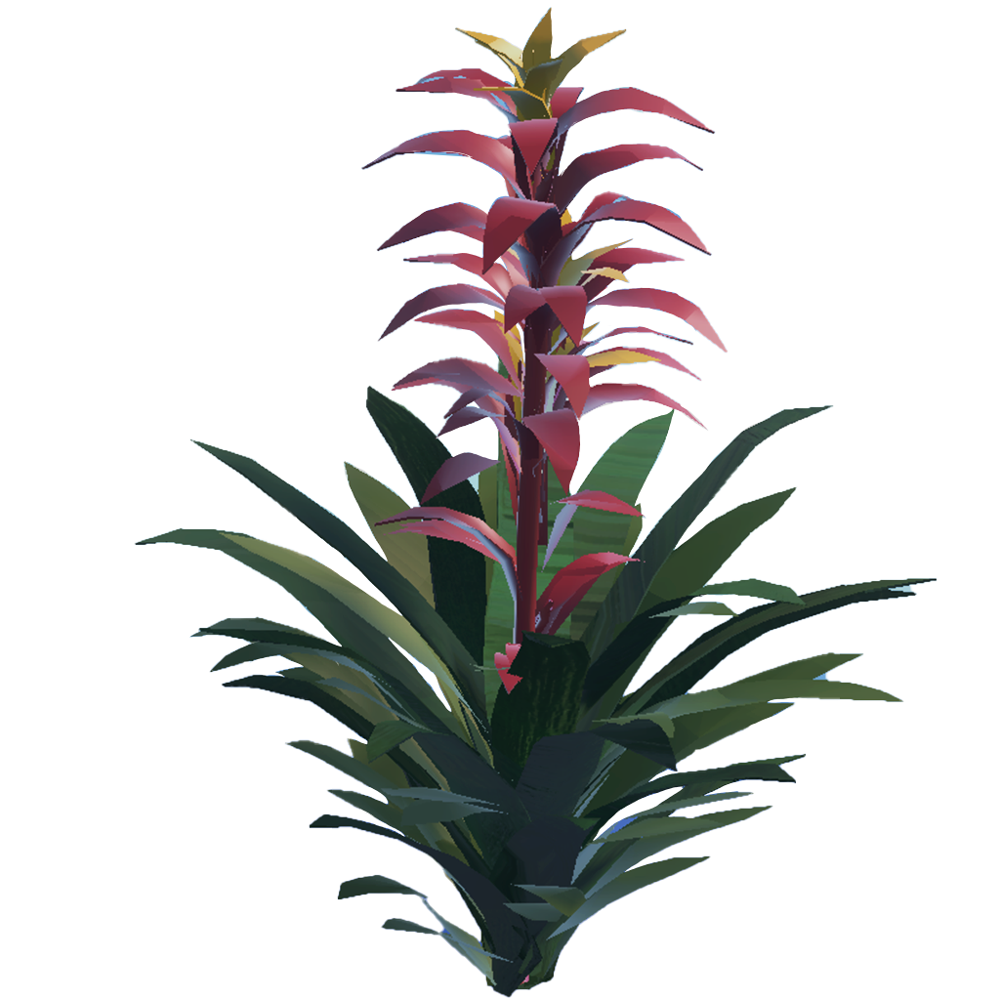
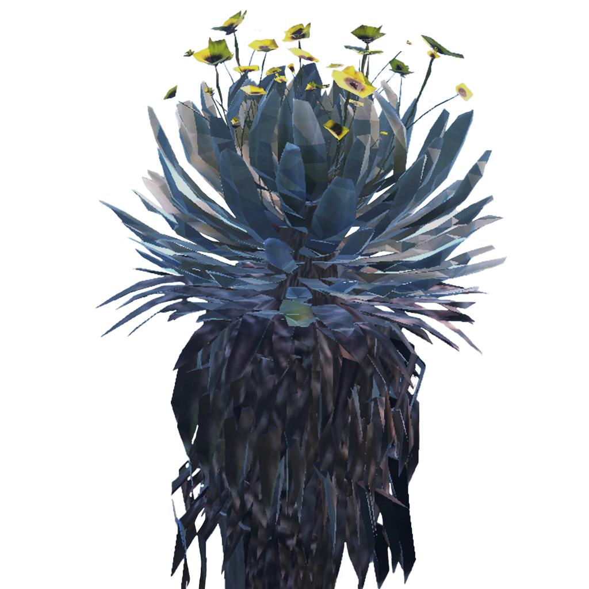
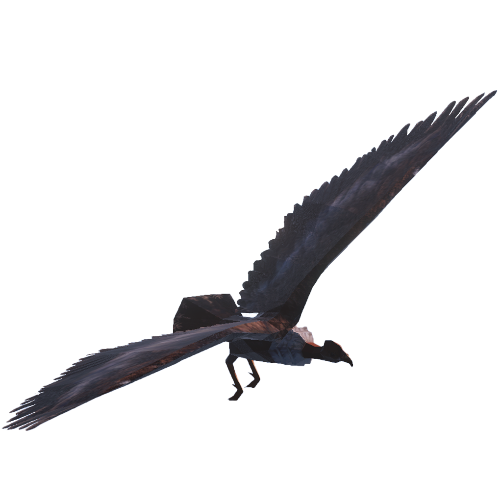

PARAMOVERSO

The páramo is more than a landscape. Found in the high mountains of equatorial regions, it is a living ecosystem capable of capturing carbon, transforming mist into water and sustaining an extraordinary diversity of plants and animals. Its rivers and lagoons supply water to countless communities and ecosystems throughout Colombia, making its protection essential for life far beyond the mountain.

Paramoverso is an educational and immersive experience combining mixed reality and virtual reality. Created for young people and adults, it invites visitors to discover how the páramo works, understand its importance and recognize the threats it faces—from fires and deforestation to mining and climate change.
The journey begins in mixed reality, as elements of the páramo emerge within the visitor’s physical surroundings. From there, portals lead into virtual reality, where visitors explore the forest, the microscopic world of insects and the high mountains. Each environment reveals the connections between water, plants, animals and the communities that depend on them.


As the journey progresses, visitors acquire abilities inspired by the ecosystem: capturing mist, preserving water and spreading seeds. These abilities become tools for action. Visitors must extinguish fires, heal frailejones and help restore life to a threatened landscape.
As a co-producer, CANVAR combines immersive storytelling, interaction design and technology to transform scientific and ecological knowledge into a living experience. Rather than simply explaining the páramo, Paramoverso allows visitors to understand it through exploration, discovery and action.

Through this journey, Paramoverso promotes environmental awareness and encourages people to participate in the protection and restoration of Colombia’s páramos.


Multiplatform Experience
Paramoverso can be experienced on the web, mobile devices, tablets and VR headsets. Through interactive missions, visitors explore landscapes filled with frailejones, grasses, mosses, bears, ocelots, birds and insects while discovering the relationships that sustain the páramo.
Support Paramoverso and help us continue creating new ways to connect people with the páramo.
Support ParamoversoWith the Support and Participation of

Co-produced by